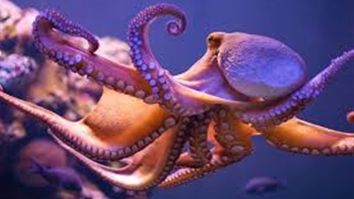

Facts
- An octopus can lose an arm to escape a predator’s grasp and re-grow it later with no permanent damage.
- Octopuses have three hearts. Two pump blood through each of the two gills, while the third pumps blood through the body.
- There are around 300 recognized octopus species
- Octopuses are considered the most intelligent of all invertebrates
- Octopuses are carnivores, which means they eat meat. Meals can include clams, shrimp, lobsters, fish, sharks and even birds